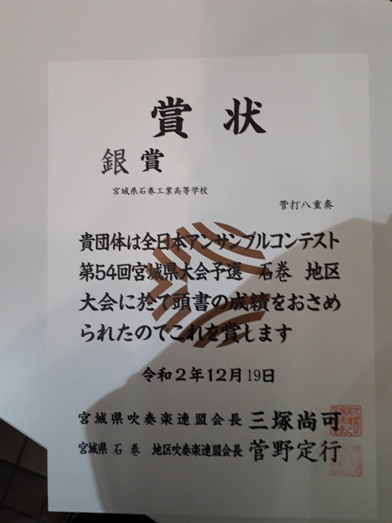

私たちは令和2年12月19日に東松島市コミュニティセンターで行われた「第54回石巻地区アンサンブルコンテスト」に1年生3人・2年生3人・3年生2人（当時）の合計8人で出場し、「三日月のシャンソン」を演奏してきました。
クラスターの発生や期末考査、資格試験などが重なり練習時間の確保が難しい中、石巻工業高校吹奏楽部初の銀賞を受賞し、銀賞の中で1位。そして全体では9位を取ることが出来ました。
金賞にはあと一歩及ばなかったものの、コロナ禍のなか部員一同が一丸となって練習に励むことができ、コンクールに出場した部員全員がいい経験になったと思います。